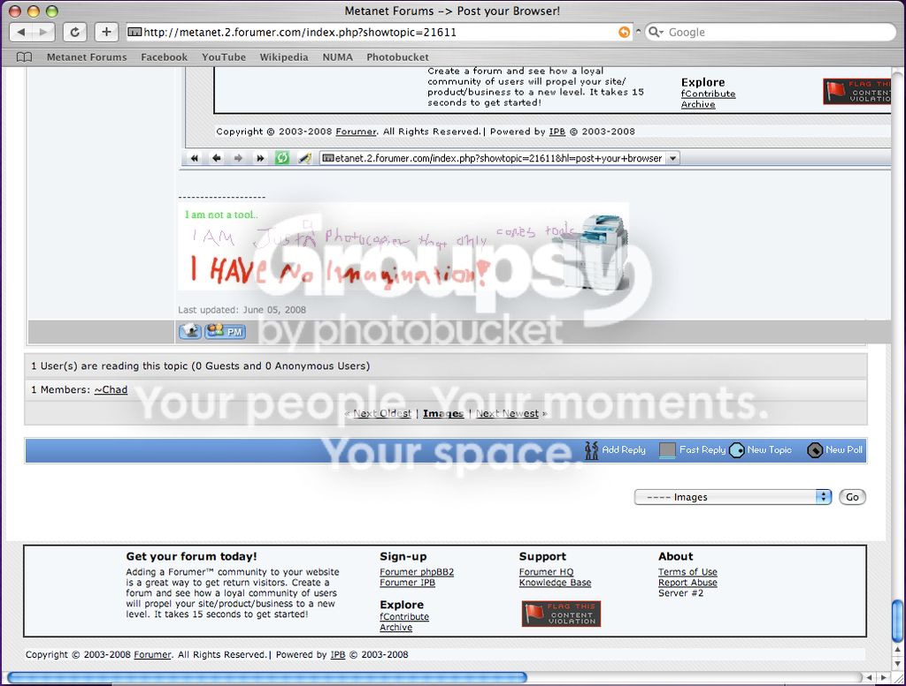

Post you Browser!
EDIT:
Here it is!

EDIT:
Here it is!


 )
) maestro could you please edit my IP out of your printscreen?



lynx


Sorry for double post, but this needs to be pinned.I highly disagree.
Change what?

Change what?Browser's theme.
That's why we don't have a suggestions forum. We don't want anybody's opinion on anything. Nothing anyone not in the position of power to implement their idea ever suggested anything that proved useful.Sorry for double post, but this needs to be pinned.I highly disagree.
But go ahead and write some formal guidelines for threads that need to be pinned. Y'know, criteria for which should be pinned and which shouldn't. You'll make mod in no time!
...just like I became a senator by just making up laws on my own and posting them around town.
 im at school btw, my home browser pwns this
im at school btw, my home browser pwns this 
Click here to view this unsettlingly large image.

Click here to view this unsettlingly large image.I want your monitor. NAO.
It's called an iMac, my good friend.Click here to view this unsettlingly large image.I want your monitor. NAO.

Now I desperately want a MacIt's called an iMac, my good friend.Click here to view this unsettlingly large image.I want your monitor. NAO.
XP whatya gonna do?